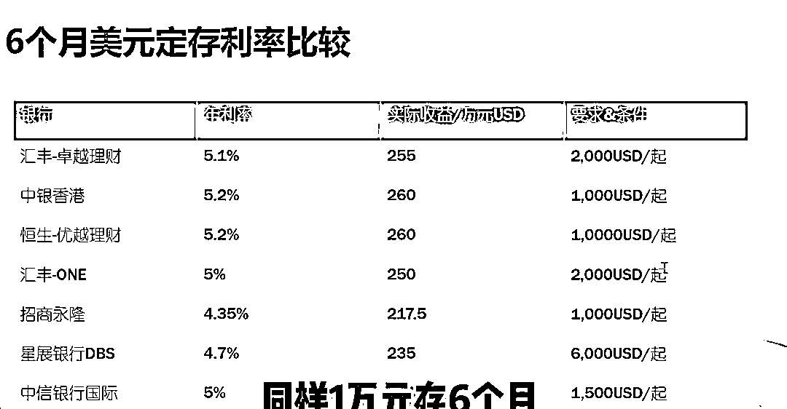
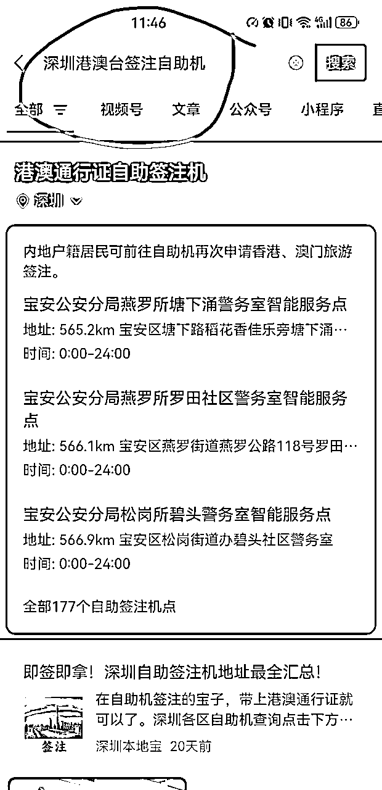
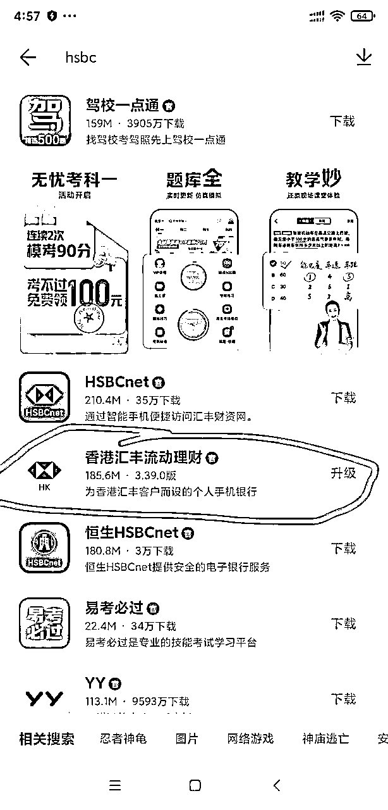

来源：https://bqrxa67uifc.feishu.cn/docx/D94Tdm2KyoCtOoxncKIcI0q3ndf
大家好，我是Andy，目前专注于AI、出海以及超级个体、数字游民以及副业等相关话题。主要做海外留学以及AI项目，在流量变现上有比较丰富的经验，尤其是在流量投放以及私域运营上。
欢迎大家和我了解，今天给大家分享如何拥有一张香港银行卡
1、为什么要开港卡？
2、开户之前需要做什么准备？
3、四大银行开户过程碰到的具体问题
4、Clubsim香港实名电话卡
5、总结
香港虽然回归大陆，但毕竟依然施行一国两制，也依然是亚洲重要的金融中心之一，办理一张香港银行卡，对于国际投资、外贸或者留学等领域的人，会有很多方便。
开香港卡主要是三个需求：
1、分散资金，更加安全
现在全球面临百年未有之大变局，持有多国货币，可以起到风险对冲的作用。另外，我个人一直持有虚拟货币，虽然在大陆炒币是合法的，但提供变现服务却是违法的，导致我们只能私下变现，容易碰到黑钱商人，进而造成大陆银行卡被冻结，非常困扰。所以多个海外卡，可以多加一道防护。
2、炒外汇
最近人民币一直面临贬值压力，虽然个人一年只有5W美元换汇额度，充分利用一下也比没有强。不过炒作外汇需要有很强的国际金融背景，波动也不小，大家需要注意风险，我这里并不构成投资意见。
3、国际化投资理财
开设香港银行卡可以用来购买美股和港股，开卡的时候可以同时开理财账户，银行本身就提供各种投资服务。当然，如果都不满足，还可以再开通券商服务，比如富途和盈透等等，然后把银行卡绑定到这些券商即可；除了股票，还可以购买美债，或者直接投资美元和港元定期存款。香港卡上做任何投资都没有内地的限制，但如果要把在香港卡上赚的美元换汇回内地，就依然有一年5W美元的限额。
由于美元持续加息，人民币持续降息，现在两个币种的息差很大。各大主流银行美元利息参考下图（会变化，仅供参考）。
还有些银行搞活动，会有几周或者几个月的活动利息加成，可以高达年利率8%以上，这些一般都可以在各个银行官网进行查询。

1、香港卡是否可以从币安等虚拟币交易所提款？
很多香港卡都可以，但不建议这么做，因为香港和欧美银行比大陆银行更严格，稍微有点问题就会封卡。即便是从币安直接提款，本质上应该还是C2C，所以风险依然很大，建议还是走自己熟悉的安全渠道变现，然后再转账到香港银行卡。
2、香港卡支持USDT充值和国内消费么？
大部分都不支持，这方面建议使用Onekey等虚拟卡，目前用下来比较稳定。但微信貌似已经不支持绑定这类虚拟U卡，支付宝有些人可以绑定，有些人不行。海外消费是一定可以的，比如用USDT购买ChatGPT、亚马逊云、油管会员或者推特会员等等。
1、港澳通行证和护照
2、通关小票
3、大陆身份证
4、居住地址证明
5、常用大陆手机号
6、少量港元现金
7、提前下载各种APP
关于港澳通行证：现在已经不分团签和自由签了，团签也可以直接从深圳过港，但能不能内地直接飞香港，我不太确定。另外，即便没有办理签注，也可以到了深圳再办理，微信搜索“深圳港澳台签注自助机”，就可以查到离你最近的自主签注点。甚至，连通行证都没有，也可以直接跑深圳办理，不过听说有些人当场就可以拿到通行证和签注，有些人却需要等待2周左右。我没法验证，有懂的可以评论区留言。

关于通关小票：其实我只有办理中国银行的时候用了下，其它银行都没用到。
关于地址证明：建议使用大陆银行或者信用卡最近三个月的纸质账单，因为这个是人人都有的，而且很容易搞到，所有香港银行也都认。纸质账单一般可以让银行直接给你邮寄，或者自己拿着电子账单直接彩印。需要注意的是，银行账单上一定要有你的名字和居住地址。
关于大陆手机号：一定要开通漫游，能当场接短信，因为注册过程中需要各种验证。有些人喜欢淘宝先买一张便宜7天行港卡，一过港就换卡，比漫游省钱好用。但办理银行卡的时候，必须保持大陆手机可用。
关于少量港元现金：这个不是必须的，但建议提前搞点港元，办理好卡之后，顺手到柜员机上存点港元，然后用自己的港元卡之间互相转账一番，看看功能是否都正常，发现问题可以马上解决！
最后建议提前下载好各个银行的APP，这样可以加速办理的速度，给办理人好感。顺便再提一句，穿着稍微靠谱点，让人家觉得你是正常人，不要看着就像犯罪分子^_^
官网：
https://www.bochk.com/
APP下载：
https://www.bochk.com/tc/more/ebanking/apps.html
安卓手机都支持直接下载APK文件，不需要GooglePlay，安装第一个（Bochk）和第四个（Boc Pay）。
Bochk是手机银行APP，Boc Pay 感觉类似香港的支付宝，是一个支付工具，比较通用。其实我觉得这个是不用安装的，但办理开户的时候，柜员一般会要求安装，所以还是提前装了比较好。
中银是我们这次去办理的银行中，唯一需要预约的（并不是强制预约，可能是我们运气不好，没碰到不需要预约的分行）。预约方法是微信搜索公众号“中銀香港微服務”，关注后点击“银行服务”→“我要预约”。
为什么要开通中银？
因为中国银行毕竟是中国背景最硬的国有行，同时还负责外汇管理，在换汇的汇率方面，我对比过几家主流银行，中银是最好的。
中银无管理费。
碰到的问题
中银的实体卡有的分行没有已经预制好的卡片的话一般是是4周之内平邮寄送到填写的居住地址。这里要特别提醒，当没拿到实体卡的时候，千万别忘记APP设置的账户和密码，一旦忘记，只能到香港的分行才能修改密码。只有拿到实体卡之后才支持线上修改密码，因为线上改密码需要用到实体卡号。
官网：
https://www.hsbc.com.hk/zh-cn/
APP下载：办理汇丰的时候，柜员让我们当场扫码下载APP，结果安卓APP是GooglePlay的链接，有小伙伴没有GooglePlay，柜员非常熟练的推荐我们下载“百度手机助手”，然后在里面搜索“香港汇丰流动理财”安装即可。

为什么要开通汇丰？
汇丰除了定存利息比较高，还有一大优势：全球汇丰银行之间转账免手续费，包括从内地汇丰转账到香港汇丰，这非常适合那些经常需要小额转账的用户。
另外汇丰属于全球化银行，在海外优势比较大，直接对接很多海外服务。比如同行的一个小伙伴，炒美股是用的富途，之前绑定的是新加坡华侨银行和招商永隆，从富途提款到这些银行都需要费用，汇丰则直接免费。
汇丰one账户无管理费。
碰到的问题
汇丰银行，有的分行可以当场就领到实体卡，有的则会通过邮寄的方式送达你内地的地址。
招商永隆就是国内的招行银行收购了香港的永隆银行之后改名的，他们是一家。所以内陆无论安卓还是苹果，都可以直接在系统自带的应用商城中搜索安装“招商永隆一点通”，然后在APP中就可以在内陆直接开通招商永隆的账户了，但是开通之后是不能用的，必须肉身到香港任意分行激活一下，非常的快捷。
在内陆直接开卡的保姆级视频教程：
https://www.youtube.com/watch?v=PoIXdHIXxK8
为什么要开招商永隆？
招行永隆是因为我在内陆用的最多的银行就是招商，用习惯了！招商永隆的APP和招行的APP体感完全一样，用起来比较丝滑。而且如果有招行卡，开通招商永隆几乎就是秒开。但招商永隆的存款利息和汇率都不是最好的，普通卡还要存1W港元进去，否则每个月都要收取100港币管理费。也可以直接申请招商永隆的金葵花卡（看你话术），这样就免管理费了。注意，按照官方的说法，只是暂时免管理费（其实已经连续免费多年了），日后不排除恢复管理费，届时估计金葵花的管理费可能会更高。
碰到的问题
招商永隆一般不能当场下卡，两周左右寄送到内地居住地址，顺丰到付。
官网：
https://bank.za.group/hk
APP下载：
https://bank.za.group/hk/app-download
为什么要开通众安？
与以上三家常规银行不同，众安是虚拟银行，这个虚拟主要是指它是线上银行，不提供线下网点，类似支付宝的网商银行。
香港其实有好几个虚拟银行，但功能最全，用户最多的毫无疑问就是众安了。只要用香港本地的WIFI就可以直接线上开通，作为一个备用卡还是很不错的，毕竟也是0管理费。
最后，建议开好虚拟卡的小伙伴们，直接在香港申请它的实体Visa卡（APP里可以直接申请），因为APP上好像说在内陆无法申请实体卡。开通实体卡需要虚拟卡中有25港币作为邮寄费用，所以需要用其它卡往里面转账25港币，我是先在柜员机上往汇丰存了100港币现金，然后用汇丰转账给众安，整个过程非常丝滑。
Clubsim官网：
https://clubsim.com.hk
除了办理银行卡，我们还顺手在7天连锁超市里买了一个可以实名的香港电话卡。因为在内地开设一些海外的服务时，经常遇到内陆电话不能用的情况，所以有一张香港卡，可以预防万一。同时也方便以后多次到香港，用这个卡肯定比内陆号码漫游好用。
这个卡的好处是支持实名，不会像虚拟卡容易被消号，同时它的保号成本比较低，半年只要6港币，可以在内陆接收短信。
香港也有一个类似内陆“银联”的东西叫“FPS”，中文叫“转数快”，所有香港银行通过这套系统都可以实现用电话号码或者电子邮件作为账户名直接转账，而且都是无费用，秒到账！不过这个服务都需要到APP里自行开启，默认都是关闭的。
现在几乎所有的香港银行卡都是可以免费开户的，只是难度稍微有些不同，但我猜日后大概率是会提升难度的，以前就有前车之鉴，曾经也完全放开过，后来办理的人多了，门槛瞬间提高很多，我当时就是被卡死了，所以记忆犹新。这次重新放开之后，赶紧就来办理了。建议有需求的朋友们，能尽早办还是尽早办！
这里提一句，从香港到澳门然后再返回香港，只消耗一次香港签注。
最后，本文仅分享开卡流程，至于每个卡的具体特性、用法和注意事项，还需要等自己长期实战之后才能分享，有兴趣的朋友可以和我交流，如果觉得有用，可以点个赞。